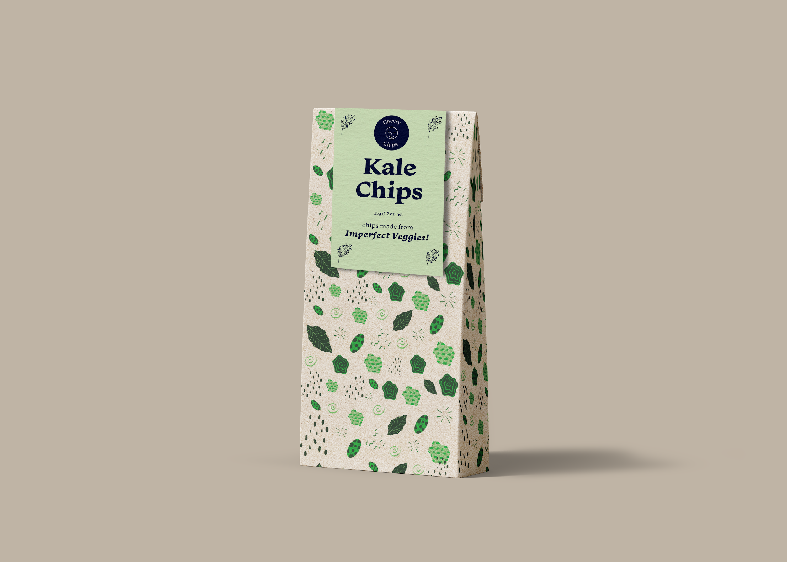
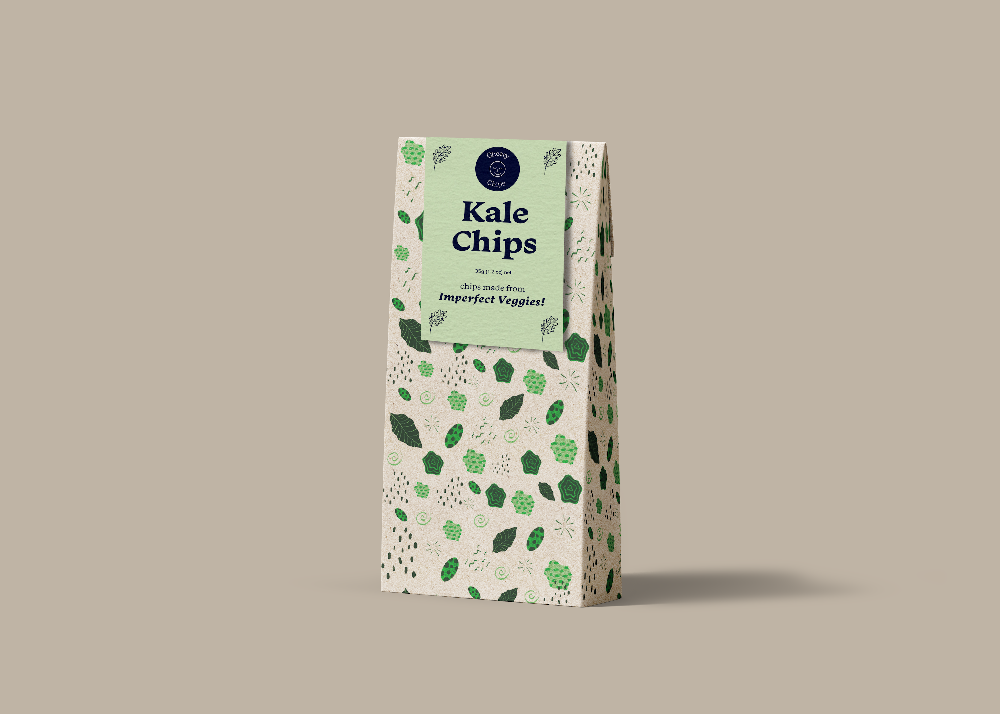
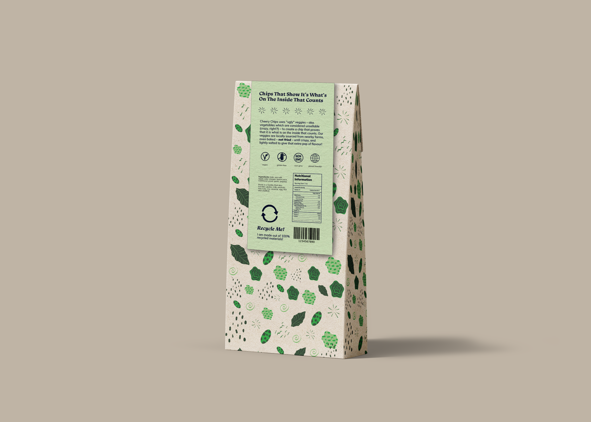
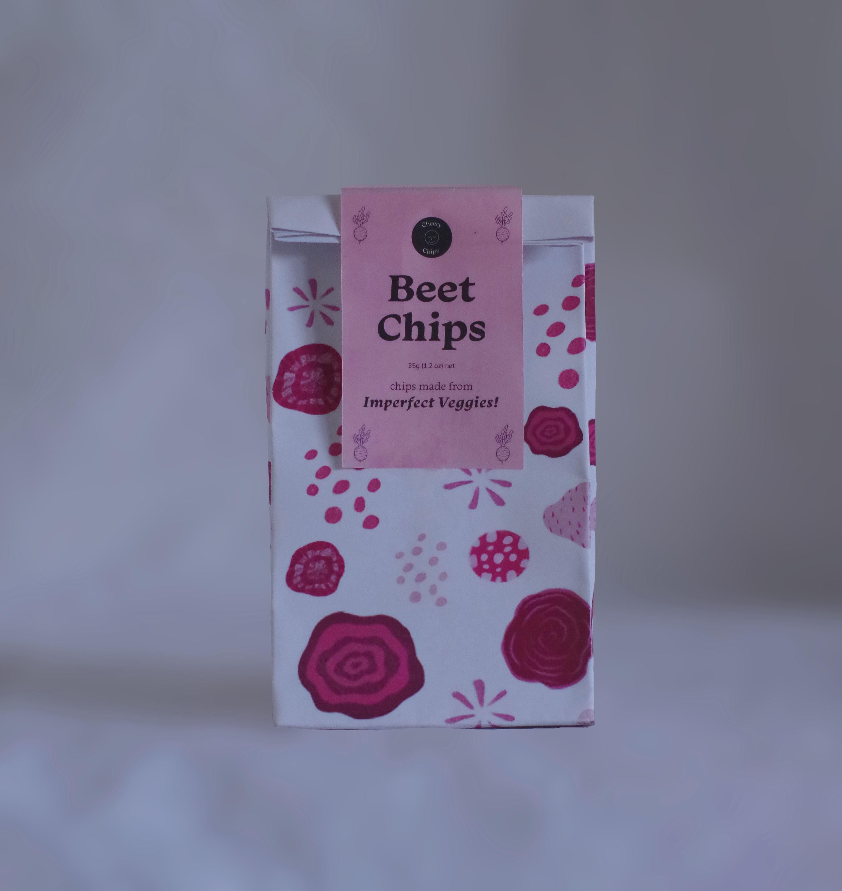
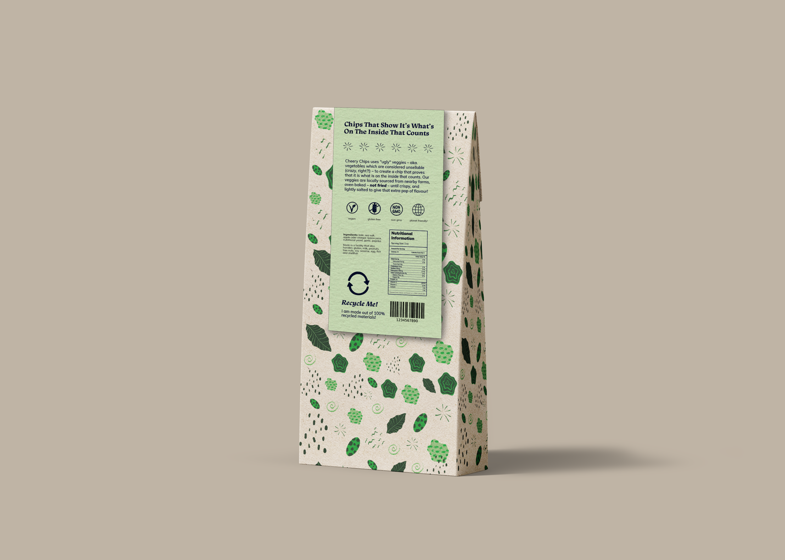
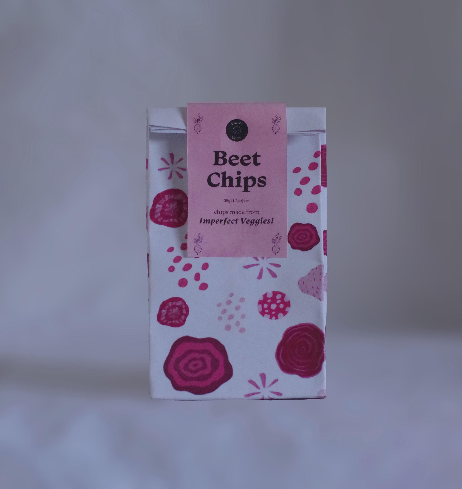
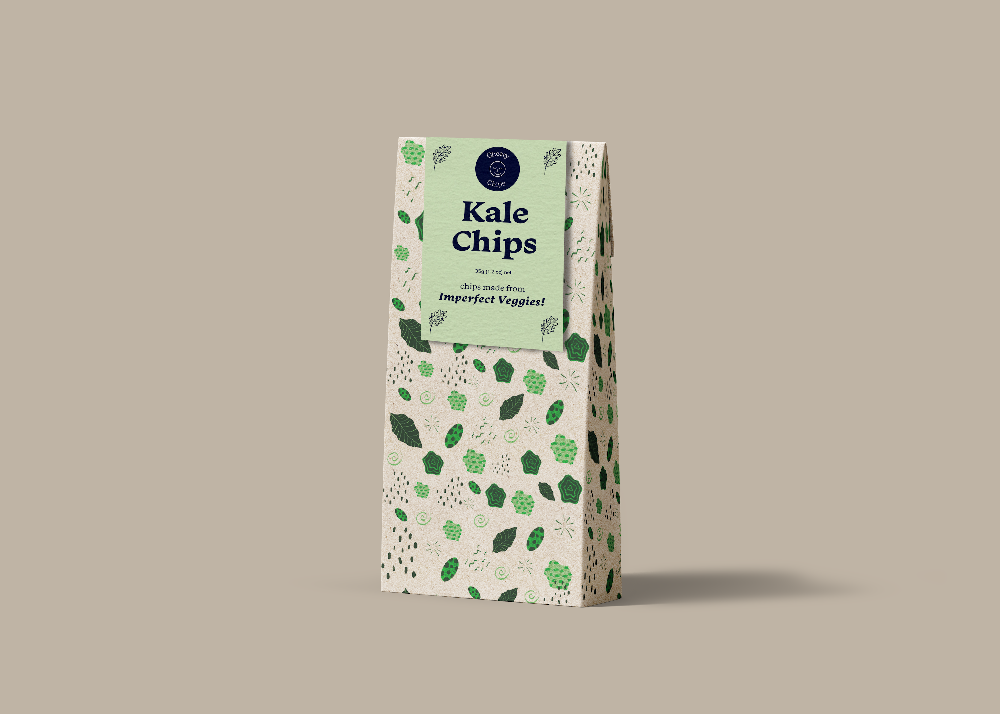
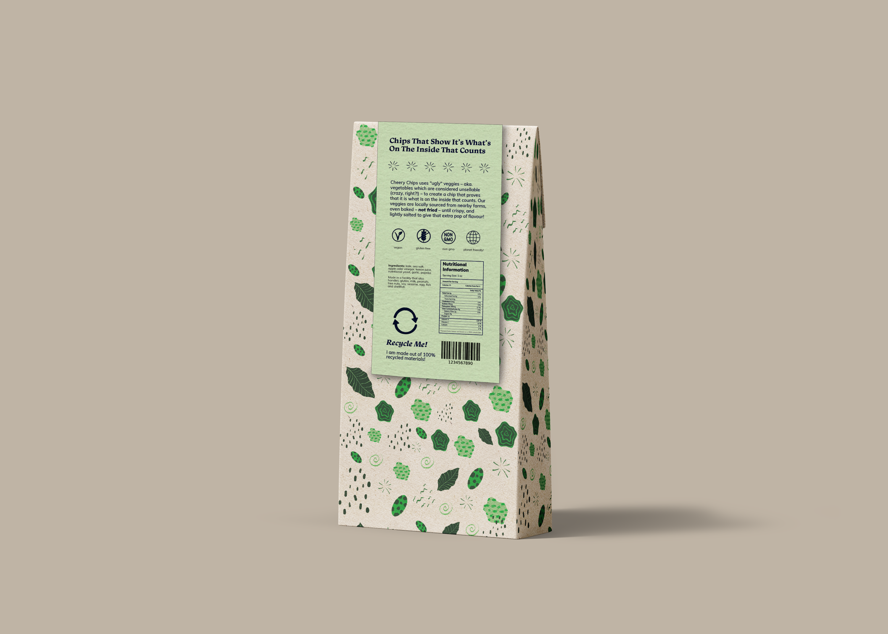
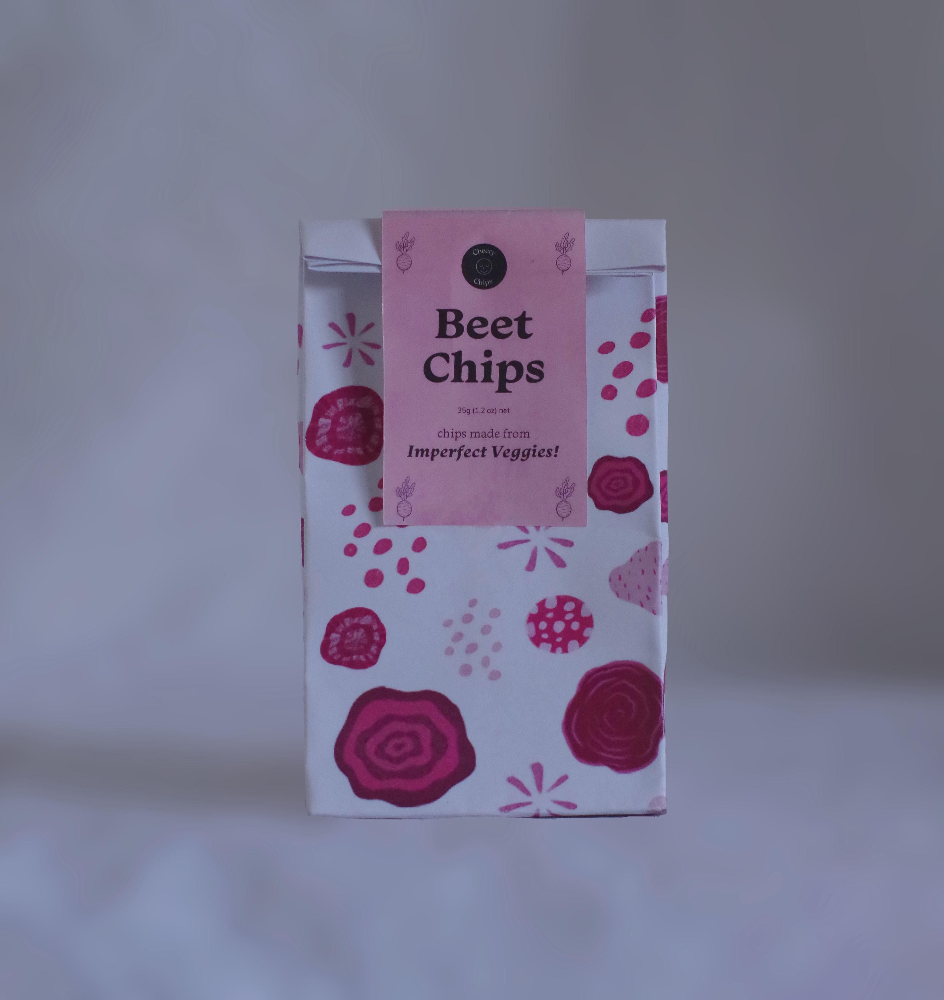

 





The brief of this task was to design a set of environmentally sustainable packaging for a dry food of our choice. I chose to focus on vegetable chips as I found that there wasn’t much focus in sustainability for this particular food group. Cheery Chips aims to minimise waste through the manufacturing of their packaging, by using packaging made up of 100% recyclable materials, which can then be recycled again once the snacks are consumed. The design of the packaging incorporates a fun, playful abstract style reflecting our motto that our chips show “that it’s whats on the inside that counts” to capture the delicious taste of our chips, each differentiated by colour however still working cohesively as a set through individual colours suited to each product and loose, abstract illustrations to highlight the sense of ‘imperfection’, and the packaging is printed on 100% recyclable eco-star paper.


